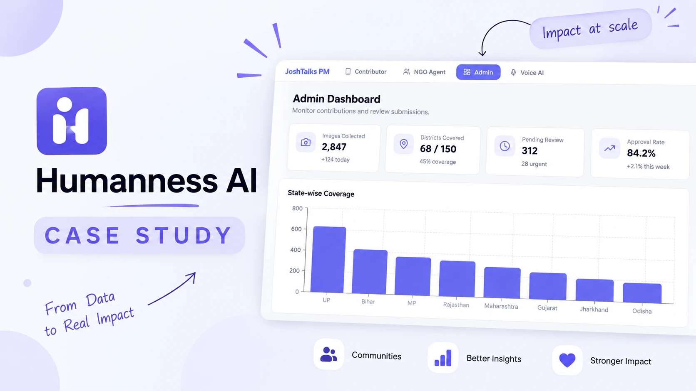

Task 1 · Image Collection Platform PRD
Modern AI models perform well on global datasets, but often fail to recognise culturally and geographically relevant elements from India: rural infrastructure, regional practices, local environments. Humanness, by Josh Talks, closes that gap by building large-scale vision datasets sourced directly from every district.
01 · Problem & Goal
The gap is primarily driven by the lack of high-quality, structured datasets that represent India's diversity at scale — so the fix has to be a data platform, not a smarter model.
Goal. Design a scalable, inclusive, quality-driven system that supports contributors in low-resource environments, enables efficient validation by internal teams, and ensures the creation of reliable datasets for training AI models.
02 · Assumptions About Users
The entire design has to hold across both ends of this gap at once.
Contributors
Operate on low-end Android phones, often on 2G/3G networks, with limited technical literacy and in their native regional language.
Reviewers / Admins
Work on web browsers with full connectivity, reviewing and validating submissions at scale.
03 · PRD Success Metrics
Every metric is tied to why it matters, not just what it measures.
| Category | Metric | Target | Why it matters |
|---|---|---|---|
| Supply | Daily uploads | 50,000 | Indicates platform scale and contributor activity. |
| Coverage | District completion | 100% in 12 months | Measures mission completion and geographic reach. |
| Coverage | Images per village | 1,000 | Ensures dataset depth for training. |
| Quality | Approval rate | > 85% | Maintains dataset accuracy and reliability. |
| Quality | Auto-rejection rate | < 15% | Indicates input quality and contributor guidance. |
| Efficiency | Review time / submission | < 45 sec | Ensures scalable review operations. |
| Engagement | Contributor retention, week 2 | > 40% | Measures stickiness and long-term engagement. |
| Reliability | Offline sync success rate | > 95% | Ensures usability in low-connectivity regions. |
04 · User Personas
Persona 1
Persona 2
The source PRD continues past Persona 2 with more detail (a full contributor journey map and further personas). This page reflects what was cleanly extracted from the document; the rest is available in the original PRD on request.
05 · The Admin Side
The counterpart to a low-bandwidth contributor app: a dashboard built for the reviewers described above, tracking supply, coverage and quality in one view.
